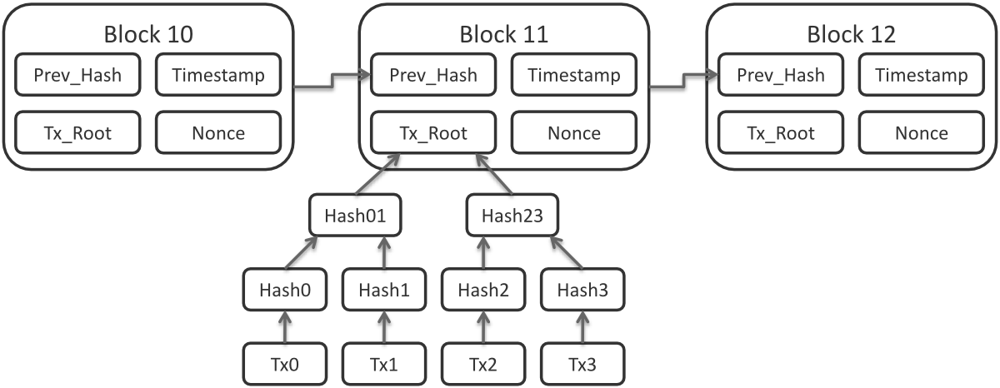

class: center, middle, inverse # Blockchain ### Vicente Dragicevic --- # Blockchain -- * Cadena de bloques... -- * Cada bloque contiene (entre otros): -- * Lista de transacciones -- * Header: -- * Hash del header del bloque anterior * Timestamp * **Nonce** --- # Blockchain  --- class: center, middle, inverse # Transacciones --- # Transacciones -- * Mueven fondos de una dirección a otra -- * Contienen (al menos): -- * Sender -- * Firma del sender -- * Cantidad a transferir -- * Recipient --- class: center, middle, inverse # Mining --- # Mining ## 2 funciones: -- * Crear confiaza -- * Crear nuevas monedas --- # Mining -- 1. Seleccionar transacciones que **no** han sido agregadas -- 2. **Verificar** transacciones -- 3. Incluir transacción de recompensa -- 4. Empaquetar transacciones en un bloque -- 5. while(TRUE) *// Proof of Work* -- * h = hash(bloque) -- * if (h < target) break; -- * else **nonce**++ -- 6. El bloque es **válido** --- # Mining: Proof-of-Work -- * Broadcast del bloque validado -- * Los otros *miners* deben volver a empezar -- * Todos le creen a la cadena **más "larga"** --- # ¿Y para qué sirve? <img src="./assets/images/fork.png" style="width: 1000px"> --- class: center, middle, inverse # Ethereum --- # Ethereum -- * *Ether* -- * *Accounts*: -- * Externally owned -- * **Contract** accounts --- # Ethereum  --- # Smart Contracts -- * **Accounts** que contienen código -- * Lenguaje **Turing Completo** -- * Almacenan *ether* -- * Almacenan datos -- * Realizan transacciones --- # Ethereum: Mining -- * Proof of Work -- * Para validar transacciones, se revisa que el estado resultante sea consistente. -- * Si se hace una transacción a un **smart contract**, este se ejecuta. -- * Se paga por cada operación en el código. --- # Ethereum: Smart Contracts ```solidity contract MyToken { mapping (address => uint256) public balanceOf; // Array of balances function MyToken(uint256 initialSupply) { balanceOf[msg.sender] = initialSupply; // Give the creator all initial tokens } /* Send coins */ function transfer(address _to, uint256 _value) { if (balanceOf[msg.sender] < _value) throw; // Check if the sender has enough if (balanceOf[_to] + _value < balanceOf[_to]) throw; // Check for overflows balanceOf[msg.sender] -= _value; // Subtract from the sender balanceOf[_to] += _value; // Add the same to the recipient } } ``` --- class: center, middle, inverse # Smart Contracts: Casos de Uso --- # Decentralized Autonomous Organizations (DAOs) .left-column[ * Gente (o contratos) compran acciones * Accionistas envían peticiones * Peticiones se aprueban por votación ] .right-column[] --- background-image: url(./assets/images/slockit.png) # Internet of Things --- class: center, middle # ¡Y mucho más! ## Juegos ## Apuestas ## Marketplaces ## ... --- class: center, middle, inverse # Futuro --- # Futuro -- * Smart Contracts + AI -- * Power Grids -- * IoT -- * Instituciones --- class: center, middle, inverse # Fin!